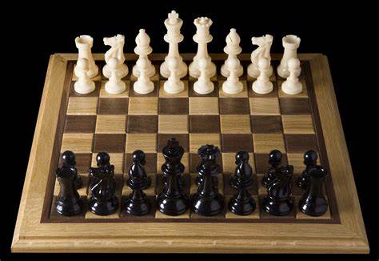

Sakk
A sakk ősi, perzsa eredetű táblajáték két személy részére, és egyben sportág is. A „sakk” szó – amely nemcsak a
játékot jelenti, hanem azt a helyzetet is, amikor az ellenfél királya „ütésben van” – a perzsa „shāh” (شَاه) szóból
ered, amely uralkodót jelent.
A sakk története a legendák világába nyúlik vissza. Az ismert mese szerint egy
brahmin, név szerint bizonyos Széta találta fel a sakkot. Jutalmul a rádzsától első hallásra jelentéktelennek tűnő
fizetséget kért, mindössze annyi búzaszemet, amennyi a sakktábla mezőire a következő szabály szerint képletesen
rátehető: az első mezőre egy, a másodikra kettő, a harmadikra négy, vagyis az előzőnek mindig duplája.
Hamar kiderült, hogy ennyi búza nem terem a Földön, hiszen a brahmin összesen 264−1=18 446 744 073 709 551 615
(tizennyolctrillió-négyszáznegyvenhatbilliárd-hétszáznegyvennégybillió-hetvenhárommilliárd-hétszázkilencmillió-ötszázötvenegyezer-hatszáztizenöt)
búzaszemet kért.

Sakk világversenyek és egyéni kategóriás versenyek:
- Női sakkvilágbajnokság
- Ifjúsági sakkvilágbajnokság
- Junior sakkvilágbajnokság
- Európa-bajnokságok
- Egyéni sakk-Európa-bajnokság
- válogatottak Európa-bajnoksága
- Junior sakk-Európa-bajnokság
- Ifjúsági sakk-Európa-bajnokság
- Magyar sakkbajnokság
- válogatottak világbajnoksága
Sakk bábúk
- Paraszt
- Bástya
- Ló
- Huszár
- Királynő
- Király
Magyar sakk versenyek